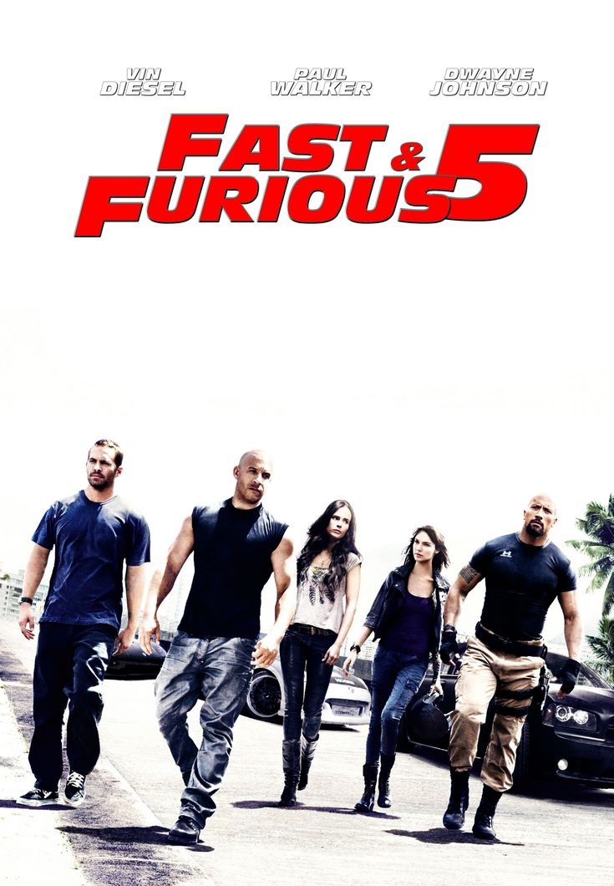
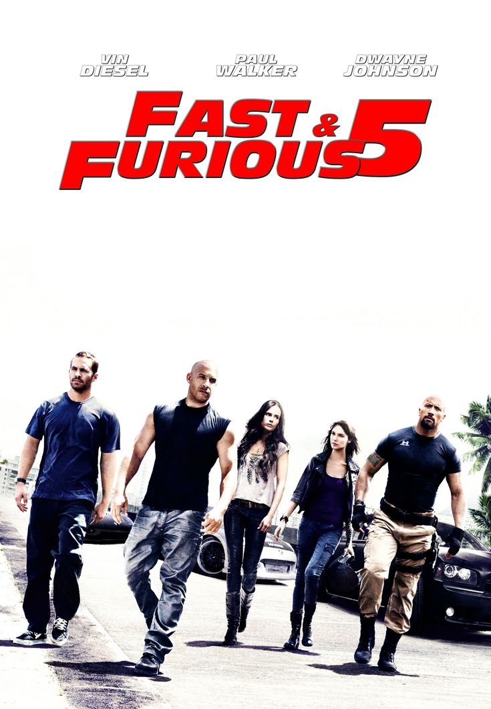
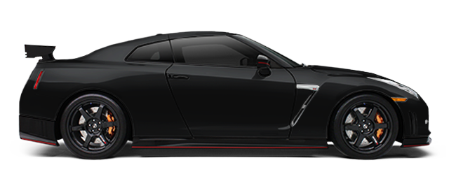

Velocidade, ação e adrenalina tomam conta do Rio de Janeiro! Dominic Toretto (Vin Diesel) e Brian O'Conner (Paul Walker) estão de volta, reunindo um time lendário para o maior golpe de suas vidas. Enquanto fogem das autoridades e enfrentam um poderoso inimigo, eles precisam confiar na velocidade, na habilidade e na família para sobreviver. Com perseguições eletrizantes, carros alucinantes e cenas de tirar o fôlego, Velozes e Furiosos 5 eleva a franquia a um novo nível.
Você está pronto para acelerar?Velozes e Furiosos 5: Operação Rio
2h 10min | Ação, Suspense
6 de maio de 2011

Utilizado por Brian O'Conner